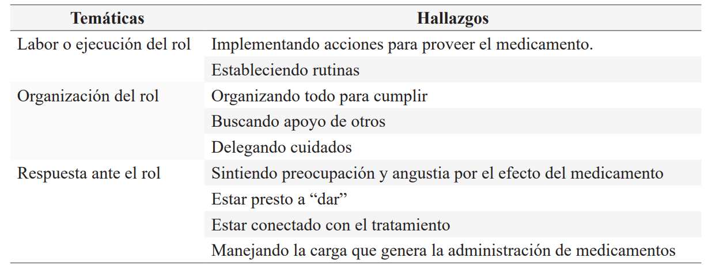
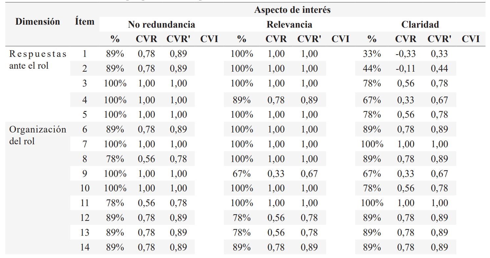
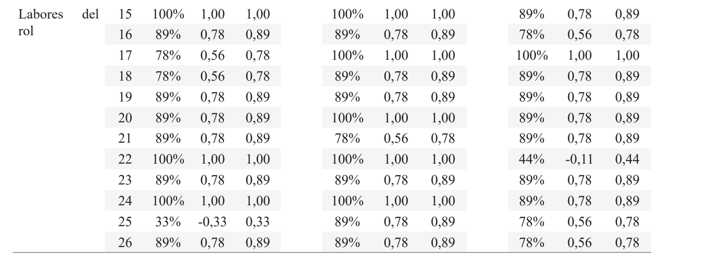

ISSN-PRINT 1794-9831 / E-ISSN 2322-7028
Vol. 19 Nº 3 / sep - dic, 2022 / Cúcuta, Colombia.
ISSN-PRINT 1794-9831 / E-ISSN 2322-7028
Vol. 19 Nº 3 / sep - dic, 2022 / Cúcuta, Colombia.
Resumen
Objetivo: Diseñar un instrumento para medir la adopción del rol del cuidador familiar en la administración de medicamentos en personas con enfermedad crónica y establecer tanto su validez de contenido como facial. Método: Estudio metodológico que incluyó tres fases: diseño del instrumento, determinación de la validez de contenido con 9 expertos y determinación de la validez facial mediante entrevistas cognitivas a 14 cuidadores y juicios de 30 cuidadores de adultos con enfermedades crónicas. Resultados: Se obtuvo un cuestionario conformado por 32 ítems distribuidos en 3 dimensiones denominadas labores, organización y respuesta ante el rol. El instrumento presentó una adecuada validez de contenido dado que todos los ítems superaron el CVI mínimo de 0,58, mientras que para la escala total fue de 0,97. Por su parte, la validez facial mostró que la claridad fue del 99,6%, la comprensión fue del 98,4% y la precisión fue del 96,9%. Conclusión: El instrumento Adopción del rol en la administración de medicamentos mide de forma lógica el constructo y los ítems que lo conforman representan adecuadamente sus dominios.
Palabras Claves: Medicamentos; Enfermedad crónica; Cuidador familiar; Instrumento; Estudio de validación.
Abstract
Objective: To design an instrument to measure the adoption of the role of the family caregiver in the administration of medications in people with chronic disease and to establish both its content and facial validity. Method: Methodological study that included three phases: design of the instrument, determination of content validity with 9 experts and determination of facial validity through cognitive interviews with 14 caregivers and judgments of 30 caregivers of adults with chronic diseases. Results: A questionnaire made up of 32 items distributed in 3 dimensions called tasks, organization and response to the role was obtained. The instrument presented adequate content validity since all the items exceeded the minimum CVI of 0.58, while for the total scale it was 0.97. For its part, facial validity showed that clarity was 99.6%, comprehension was 98.4%, and precision was 96.9%. Conclusion: The instrument Adoption of the role in drug administration logically measures the construct and the items that comprise it adequately represent its domains.
KeyWords: Medications; Chronic Disease; Family Caregiver; Instrument; Validation Study.
Resumo
Objetivo: Projetar um instrumento para medir a adoção do papel do cuidador da família na administração de medicamentos em pessoas com doenças crônicas e estabelecer tanto seu conteúdo quanto sua validade facial. Método: Estudo metodológico que incluiu três fases: desenho do instrumento, determinação da validade do conteúdo com 9 especialistas e determinação da validade do rosto através de entrevistas cognitivas com 14 cuidadores e julgamentos de 30 cuidadores de adultos cronicamente doentes. Resultados: Foi obtido um questionário composto de 32 itens distribuídos em 3 dimensões chamadas trabalho, organização e resposta ao papel. O instrumento mostrou validade de conteúdo adequada, dado que todos os itens excederam o CVI mínimo de 0,58, enquanto que para a escala total foi de 0,97. A validade facial mostrou que a clareza era 99,6%, a compreensão era 98,4% e a precisão era 96,9%. Conclusão: O instrumento de adoção do papel da Administração de Medicamentos mede logicamente a construção e seus itens representam adequadamente seus domínios.
Palavras-chave: Medicamentos; Doença crônica; Cuidador da família; Instrumento; Estudo de validação.
Autor de correspondencia*
1* Enfermera.
Doctora en Enfermería
- Profesora Asociada, Facultad de Enfermería Universidad Nacional de Colombia. Bogotá, Colombia.
olchaparrod@unal.edu.co,
Enfermera.
Doctora en Enfermería
- Profesora Asociada, Facultad de Enfermería Universidad Nacional de Colombia. Bogotá, Colombia.
olchaparrod@unal.edu.co,  0000-0001-8241-8694
0000-0001-8241-8694
2* Enfermera.
Especialista. Magister.
Profesora Asistente Facultad de Enfermería, Universidad Nacional de
Colombia. Bogotá, Colombia.
mrojasm@unal.edu.co, 0000-0002-1228-9214
3* Enfermera.
Doctora en Enfermería
- Profesora Asociada, Facultad de Enfermería Universidad Nacional de Colombia. Bogotá, Colombia.
spcarrenom@unal.edu.co, 0000-0002-4386-6053
4* Enfermera.
Enfermera. Magister. Profesora Titular Fundación Universitaria
de Ciencias de la Salud- FUCS. Bogotá,
Colombia.
ajcarrillo@fucsalud.edu.co, 0000-0002-3765-7474
5* Enfermero.
Especialista. Magister.
Profesor Fundación Universitaria Juan
N Corpas. Bogotá, Colombia.
orlando.pacheco@juanncorpas.edu.co, 0000-0001-5571-2724
6* Doctora en
Enfermería. Profesora
Universidad Industrial de Santander. Bucaramanga, Colombia.
nesquivelg@unal.edu.co, 0000-0002-5354-6774
Recibido: 6 junio 2022
Aprobado: 31 octubre 2022
Para citar este artículo / To reference this article / Para citar este artigo: Chaparro-Diaz L, Rojas-Marin MZ, Carreño-Moreno SP, Carrillo-Algarra AJ, Pacheco-Hernandez O, Esquivel-Garzon N. Diseño, validación facial y de contenido del instrumento “rol del cuidador familiar en administración de medicamentos”. 2023; 20(1):33-44. 10.22463/17949831.3382
© Universidad Francisco de Paula Santander.
Este es un artículo bajo la licencia CC-BY-NC-ND

Introducción
El rol de cuidador de personas mayores con enfermedades crónicas y en situación de dependencia es asumido en gran medida por un familiar, quien se ve en la necesidad de desarrollar habilidades cognitivas, emocionales y sociales que le permitan responder a una cantidad de tareas instrumentales para las cuales no está preparado, como por ejemplo la administración de los medicamentos (1). Este proceso de transición hacia el rol de cuidador toma mayor relevancia en la medida en que en los últimos años ha aumentado el número de personas con enfermedades crónicas no transmisibles (ENT) con necesidades de cuidado cada vez más complejas(2).
En este sentido, para personas que padecen alguna ENT, posterior a las hospitalizaciones, existe un mayor riesgo de complicaciones en el hogar relacionadas con la administración de medicamentos, tales como mayor incidencia de reacciones adversas, errores relacionados con la dosis, con el medicamento, con la vía o con la hora de administración(3,4), al punto de llegar incluso a la interrupción del tratamiento. Estas situaciones conducen a exacerbaciones clínicas, deterioro físico, cognitivo, readmisiones hospitalarias y mayores costos al sistema de salud (5-7).
Los estudios sobre el proceso de administración de medicamentos se han centrado en evaluar los conocimientos y habilidades de los profesionales de la salud, los errores de prescripción y la dispensación de la medicación en los entornos hospitalarios (8,9). Sin embargo, el uso más extenso de ellos se da en los propios hogares de los pacientes, por lo cual resulta indispensable disponer de herramientas que evalúen de forma integral el proceso de administración de medicamentos, en este caso, destinado a los cuidadores familiares, quienes carecen de un suficiente soporte instrumental para la organización, ejecución y respuesta ante el rol. En este contexto, el apoyo y la educación que brinda enfermería en el proceso de preparación de los pacientes y de sus cuidadores resulta fundamental, especialmente al tratar las competencias relacionadas con el cuidado del adulto mayor en el hogar. Al analizar este contexto, es posible identificar acciones de mejora orientadas a una adecuada adopción del rol de cuidador en el hogar.
Por lo anterior, el objetivo de esta investigación es diseñar, realizar la validez de contenido y la validez facial del instrumento “Adopción del rol del cuidador familiar en la administración de medicamentos ROL-M”, realizado para los cuidadores familiares de personas con ENT en condición de dependencia. El constructo de adopción del rol está enmarcado originalmente en el concepto de transición, definido en la teoría de las transiciones por Afaf Melis (10). Así, este estudio responde a la necesidad de hacer copartícipes a los cuidadores familiares en el proceso de administración segura de medicamentos, por lo que con este estudio se decanta y se valida el esfuerzo por aportar evidencia que permita comprender el complejo mundo de los cuidadores.
Metodología
La investigación fue de tipo psicométrico (11), se realizó entre marzo y junio de 2021 en la ciudad de Bogotá. Se siguieron los aspectos teóricos propuestos por la Comisión Internacional del Test y pautas a seguir para la aplicación de test (12), dentro de los cuales incluye la justificación o finalidad de la construcción del instrumento, el soporte conceptual y teórico del constructo a evaluar, la construcción y evaluación cualitativa de ítems, la validez de contenido y la validez facial (Figura 1). Con una muestra no probabilística por conveniencia, con participación de 9 expertos, 44 cuidadores familiares (14 entrevista cognitiva y 30 evaluación de ítems). Teniendo en cuenta lo anterior, para esta investigación se contemplaron tres fases: justificación y soporte conceptual, redacción de ítems y validación de contenido y facial.
En la siguiente imagen se presentan las fases de desarrollo del estudio, para determinar el diseño del instrumento, adopción de rol de cuidador familiar en la administración de medicamentos (ROL-M) y su validación facial y validación de contenido de este.
Figura 1. Pasos para la elaboración del instrumento de ROL-M.
Fuente: Elaboración propia
Fase I: Justificación y soporte conceptual
La adopción del rol de cuidador implica una transición que involucra elementos cognitivos, comportamentales y relacionales. Como proceso dinámico, dicha adopción debe evaluarse periódicamente, de forma que se puedan realizar intervenciones de clarificación, modelación y ensayo del rol (13), incorporando recursos acordes con las necesidades tanto del paciente como del cuidador, de forma que faciliten la adherencia terapéutica y el éxito del tratamiento (14). En este contexto, se requiere de un instrumento para evaluar la adopción del rol en el uso de medicamentos por parte de cuidadores familiares de personas mayores con enfermedad crónica, de forma que pueda ser usado para evidenciar los cambios y progresos que están ocurriendo en este proceso.
Así, la construcción del instrumento ROL-M surgió de la revisión de la literatura y estuvo basado en las tres dimensiones de la versión original del instrumento “Adopción del rol del cuidado de la persona con enfermedad crónica” (13) conjugado con la experiencia de las investigadoras en el conocimiento del rol de los cuidadores familiares de adultos mayores en condición crónica.
Los hallazgos fueron organizados de acuerdo con las características comunes, las relaciones entre sí y la afinidad temática del contenido. Adicionalmente, se realizó un proceso de comparación continua en la búsqueda de patrones para posteriormente asignar una categoría a cada uno de los grupos que surgieron con los resultados seleccionados. Luego, se realizó una revisión teórica del proceso identificado que correspondió a las labores, la organización y las respuestas del cuidador, ello ubicado dentro del marco teórico y conceptual de las transiciones aportado por Meleis, lo que permitió integrar los hallazgos con las propiedades teóricas.
Fase II: Redacción de ítems
Para la construcción y evaluación cualitativa de los ítems, de forma que tuvieran características o atributos útiles, uniformes e importantes que identificaran el rol del cuidador familiar que asume la preparación y administración de medicamentos en el adulto mayor casa y a partir de la revisión de la literatura y de la definición del constructo de la adopción del rol en el uso de medicamentos, se construyó una primera versión del instrumento conformada por 26 ítems, con la participación del equipo de investigación y un lingüista con el fin de alinear los ítems con un lenguaje sencillo y un orden gramatical.
Fase III: Validez de contenido y validez facial
Para la validez de contenido, se contó con la participación de 9 expertos (5 hombres y 4 mujeres) con formación de maestría (n=8) y doctorado (n=1), procedentes de Colombia, expertos en el cuidado de adultos con enfermedades crónicas, en la realización de juicios y decisiones basadas en la evidencia, reconocimiento en la comunidad y disponibilidad para participar en el proceso con imparcialidad. El acuerdo entre los jueces se determinó mediante la validez de contenido definido por Lawshe y modificado por Tristán (15), mientras que la evaluación de cada ítem se realizó teniendo en cuenta los criterios de redundancia, relevancia y claridad.
Con los resultados, se realizó el cálculo de la razón de validez de contenido (CVR) para determinar qué ítems del instrumento eran aceptables y debían mantenerse en la versión final del mismo. Además, se estableció el índice de validez de contenido (CVI) para todo el instrumento. Posteriormente, los investigadores y un lingüista con experiencia en producción de textos escritos y conocimiento de la terminología en salud consolidaron la información de cada ítem con las observaciones emitidas por los expertos y tomaron decisiones respecto a la estructura semántica, conceptual y de contenido. De este proceso, se dejaron como definitivos aquellos ítems que tuvieron un índice de acuerdo igual o mayor a 0,58, lo que condujo a la elaboración de una segunda versión del instrumento.
En un primer momento, se realizaron 14 entrevistas cognitivas semiestructuradas a cuidadores de adultos con enfermedades crónicas mediante videoconferencia y con una duración aproximada de 40 minutos cada una. Para la recolección de la información, se utilizó la técnica de sondeo verbal, el cual estuvo orientando hacia el juicio de los ítems en términos de comprensión/interpretación, recuerdo y juicio (16). Los datos fueron recogidos de forma concurrente mediante notas de campo y las entrevistas fueron grabadas con previo consentimiento de los participantes.
En un segundo momento, los ítems fueron evaluados por otro grupo de 30 cuidadores familiares de adultos mayores con enfermedad crónica. Para la inclusión en el estudio, los participantes debían ser mayores de 18 años, llevar un tiempo de cuidado de seis meses o más y demostrar capacidad mental para responder o evaluar el instrumento.
Para validar los ítems del instrumento de acuerdo con criterios de claridad (tipo de lenguaje o redacción fácil de entender), precisión (expresión en un lenguaje conciso y exacto, sin dejar dudas) y comprensión (comprensión de lo que se entiende al leer el ítem). Los investigadores establecieron el porcentaje de acuerdo entre los jueces en cada uno de los ítems y se decidió que los valores superiores al 85% se considerarían satisfactorios siguiendo los criterios planteados en el estudio de Villamizar y Laguado (17). Por último, la información emitida por los participantes y expertos se consolidó con el fin de analizar la claridad, precisión y comprensión de los ítems, lo que llevó a un consenso final y consolidación del instrumento.
Consideraciones éticas
La investigación se enmarcó en los principios éticos para las investigaciones con seres humanos en Colombia (Res. 8430/93) y de acuerdo con las pautas éticas dispuestas por el Consejo de Organizaciones de las Ciencias Médicas (CIOMS). Además, se cumplió con las normas vigentes de propiedad intelectual de la Universi¬dad Nacional de Colombia (Acuerdo 035/2003) y obtuvo los avales éticos del Comité de Ética de la Universidad Nacional de Colombia (Aval 012 de 2021).
Resultados
Fase I: Justificación y soporte conceptual
Una vez seleccionados, analizados y agrupados los hallazgos de 27 piezas de investigación, la agrupación temática de la información permitió integrar los conceptos más abordados en los artículos. A partir de ello, emergieron tres temas principales: labores del rol, organización del rol y respuesta ante el rol (Tabla 1).
Tabla 1. Principales temas y hallazgos que emergieron de la revisión de literatura
Fuente: Elaboración propia
Frente a las labores o ejecución del rol, este integran las acciones propias de la administración del medicamento, que incluyen los pasos y procedimientos al momento de realizar la administración del medicamento a la persona en condición de cronicidad. La organización del rol, es definida como las acciones previas realizadas para facilitar y anticiparse al proceso de administración del medicamento a la persona en condición de cronicidad, y la respuesta ante el rol, comprende las percepciones o sentimientos asociados a la adopción eficaz del rol, derivado de la experiencia de administración del medicamento a la persona en condición de cronicidad.
Fase II: Redacción de ítems
La construcción y evaluación cualitativa de los ítems permitió elaborar un cuestionario inicial conformado por 26 ítems que fueron organizados y denominados bajo tres dominios. El dominio 1, labor o ejecución de rol (1-5 ítem), buscó hacer explícitas las actividades instrumentales frente al uso de medicamentos. Se optó por usar el término “dar los medicamentos” en lugar de “administrar los medicamentos”, porque es una forma sencilla, general y culturalmente más clara y de uso entre los cuidadores.
En el dominio 2, organización del rol (6-14 ítem), se hizo énfasis en acciones que impliquen conducta como el hecho de “pedir ayuda”, “compartir”, “saber qué hacer”, “haber enseñado” y a la búsqueda de información sobre los medicamentos que complementen las indicaciones de prescripción.
Finalmente, en el dominio 3, respuesta ante el rol (15- 26 ítem), se hizo énfasis en la manifestación de sentimientos con palabras como “me siento” y la presencia de efectos positivos o negativos “estoy”, “confío” o “sobrecargado”. En todos los ítems del instrumento, se optó por referirse al receptor de cuidado como “el familiar que cuido”, teniendo en cuenta que es uno de los roles que puede tener el cuidador entre muchos otros. Esta versión fue sometida a la validez de contenido por expertos.
Fase III: Validez de contenido y validez facial
En la Tabla II se muestran los resultados correspondientes a la validez de contenido (CVR) según las evaluaciones obtenidas para cada ítem. Aquellos ítems que obtuvieran valores menores a 0,58, debían ser revisados. Adicionalmente, se evidenció que el índice de validez global de los 26 ítems fue de 0,75, un valor considerado aceptable.
Tabla 2. Validez de contenido por parte de los expertos
 Fuente: Datos del estudio
Como consecuencia de estos hallazgos, los ítems 8,11,17,18 y 25 fueron calificados como redundantes, los ítems 9,12,13 y 21 fueron considerados no relevantes y se pudo determinar que los ítems 1, 2, 3, 4, 5, 7, 9, 10, 16, 22, 25 y 26 no eran claros, por lo cual se ajustó su redacción. Una vez analizados los resultados, el panel de expertos decidió eliminar los ítems número 6, 11, 12 y 17 por redundancia con otros ítems y el 21 por relevancia.
Por otra parte, se realizó una reorganización de las dimensiones y de sus respectivos ítems. Así, la dimensión 1 pasó a ser la de labores-ejecución del rol, debido a que se llegó a la conclusión de que tanto los expertos (que son del área de la salud) como los cuidadores tienden a pensar primero en las actividades instrumentales del cuidado, luego pasan por aspectos del proceso (organización del rol) y por último comprenden el impacto de la labor. Entretanto, la organización del rol se mantuvo como dimensión 2. Finalmente, el dominio 3 de respuesta ante el rol pasó a ser el último y a estar compuesto por 9 ítems.
De igual forma, se incorporó un encabezado al instrumento con preguntas abiertas y cerradas que permitieran la caracterización del número de medicamentos, dosis, vía y frecuencia de administración de medicamentos, la valoración de la presencia o no de gastrostomía y el uso de otros productos naturales u homeopáticos como medidas complementarias del tratamiento. Esta segunda versión fue de nuevo evaluada por 7 de los 9 expertos que participaron en la primera ronda de validación y, con los hallazgos, se construyó la segunda versión del instrumento. Producto de esta revisión por expertos, los ajustes requeridos fueron menores, el CVI para la escala total fue de 0,97, todos los ítems tuvieron un CVR mayor a 0,71 y, gracias a ello, se mantuvieron todos los ítems excepto el 12 que obtuvo un CVR de 0,42, por lo que se eliminó definitivamente. En el ítem 18, se volvió a retomar el término “registro”, ya que los expertos expresaron que era más sencillo y común que un calendario. En el ítem 23, se vio que era más común conocer las sesiones educativas o cursos como “charlas”, por lo cual se incorporó este término. Finalmente, se mantuvieron 32 ítems, los cuales fueron sometidos a la validez facial.
El análisis y ajustes derivados de las entrevistas cognitivas se presentan en términos de comprensión, juicio y aprobación. Respecto a la comprensión, se identificaron algunas dificultades relacionadas con términos como “pastillero”, “ano”, “complemento” o “habilidad”. Al respecto, se buscaron otras opciones para reemplazar estos términos y las preguntas se ajustaron para emplear expresiones más apropiadas. De igual forma, se identificaron dificultades de comprensión debido a enunciados extensos (ítem 13 y 21), lo cual se resolvió simplificándolos.
Frente al juicio, las observaciones fueron especificas en el ítem 5 al considerar el uso del pastillero como una mala práctica que condiciona al cuidador, por lo que se decidió suprimir este término. También, en el ítem 9 no son totalmente conocidas todas las posibles vías de administración de los medicamentos por lo que se sugirió incluir la gastrostomía. Igualmente, el ítem 12 es percibido como un juicio y entendido como una acción intencional, por lo que se incluyó la palabra “involuntaria”.
Sobre la aprobación, el instrumento ROL-M fue bien aceptado por los cuidadores, los ítems fueron considerados apropiados, importantes y que además reflejan el rol que desempeñan en la cotidianidad de una forma estructurada. Algunos cuidadores manifestaron la importancia del ítem que indaga sobre el lavado de manos especialmente por el momento de pandemia por COVID-19, ya que este contexto ha propiciado que se comprenda como una actividad cotidiana en especial para el cuidado de personas con enfermedad crónica. Manifestaron que el ítem 10 resulta muy importante porque permite identificar si el paciente está siendo sobre o submedicado. De forma general, se consideró que el instrumento es fácil de completar y lo consideran una herramienta útil para obtener una visión holística de la situación del cuidador que podría utilizarse como base para planificar el cuidado.
Respecto a la validez facial realizada por el grupo de 30 participantes, predominaron las mujeres en un 93%, con una edad promedio de 52 años (mínima de 36 y la mayor de 81 años). En cuanto a escolaridad, el 40% tenían bachillerato completo, el 23% técnico-tecnólogo y un 20% formación universitaria. Finalmente, en cuanto a estrato, 7% pertenecían al estrato uno, el 57% eran de estrato dos y un 30% de estrato tres. El porcentaje de acuerdo entre los 30 participantes en el criterio de claridad fue del 99,6%, en comprensión del 98,4% y en precisión del 96,9%. En general, los participantes tuvieron pocas observaciones o sugerencias en términos de redacción, claridad o falta de precisión de cada una de las preguntas.
Discusión
El propósito de este artículo es describir el proceso de diseño, validez de contenido y facial de un instrumento que valora la adopción del rol del cuidador en la administración de medicamentos en adultos mayores, con el fin de evaluarlo y detectar las eventuales acciones de mejora necesarias para evitar hospitalizaciones, lograr los objetivos del tratamiento, el control de la enfermedad y disminuir los eventos adversos relacionados con la medicación (18).
Conseguir que la transición del cuidador se realice con altos estándares de calidad es especialmente importante en las personas que conviven con pacientes geriátricos con múltiples afecciones crónicas, dependencia y regímenes terapéuticos complejos. Estas personas, en promedio, reciben cinco medicamentos formulados y dos de venta libre, lo que los ubica en un mayor estado de vulnerabilidad y riesgo de eventos adversos derivados de una inadecuada administración del medicamento o el incumplimiento de la terapia, así como los posibles efectos secundarios, las reacciones alérgicas e interacciones con alimentos u otros medicamentos (19). Las tasas de error en la administración de la medicación durante la transición del entorno hospitalario al hogar variaron entre el 19 y el 80%, por lo cual resulta necesario garantizar la continuidad y la seguridad de los cuidados en el hogar, especialmente cuando el grado de dependencia y la pluripatología también aumentan (20).
Teniendo en cuenta las consecuencias negativas en términos de carga económica, pérdida de eficacia, posible toxicidad y resistencia, es necesario minimizar el riesgo de daño por una inadecuada implementación, mantenimiento y persistencia del régimen terapéutico a cargo de los cuidadores (21). Es así como se ha determinado que la mayoría de los cuidadores comprenden que el manejo cuidadoso de la medicación contribuye a que una persona tenga un curso de la enfermedad con menores complicaciones y que los cuidadores deban cumplir con una serie de actividades y responsabilidades diarias que involucran procesos de búsqueda e intercambio de información, compra, almacenamiento, suministro, supervisión, planificación, uso de medicamentos y toma de decisiones para mantener, aumentar, disminuir una dosis o suspender un medicamento por completo (22–24). Por ello, resulta necesaria la organización del rol para que pueda responder y cumplir oportunamente con el tratamiento.
La ejecución del rol durante el proceso de administración de medicamentos es el reflejo de la experiencia, el conocimiento y la preparación que tienen los cuidadores. Sin embargo, estudios han demostrado que la mayoría de ellos carecen de confianza en sí mismos, se sienten inadecuadamente preparados y apoyados para administrar los medicamentos en casa (25,26), por lo que como cuidadores necesitan educación para reconocer los efectos adversos de los medicamentos que puedan presentarse a medida que cambia la condición de su familiar, para así ayudarlos a desarrollar las habilidades de pensamiento crítico que les permitan manejar estos potenciales problemas (27) y responder de forma adecuada a la labor de administrar los medicamentos mediante el desarrollo de estrategias de afrontamiento que les permitan superar y manejar las emociones negativas como el temor, la ansiedad, el estrés y la depresión a partir del reconocimiento, evaluación y aceptación de su rol de cuidador (28).
Ahora bien, gran parte de los estudios en torno a la administración de medicamentos se han centrado en estudiar el cumplimento o la adherencia al tratamiento por parte de los pacientes haciendo énfasis en las causas o razones de la falta de adherencia a la medicación y los factores asociados, tales como los errores de la prescripción y dispensación dentro de los entornos hospitalarios (29). Sin embargo, en el contexto de países de medianos ingresos, los cuidadores familiares se han tenido que enfrentar a ejecutar tratamiento en casa en muchas ocasiones por vía oral incluso trascendiendo a otras vías para las que no se sienten preparados.
En relación con la ejecución del rol en los cuidadores familiares de adultos mayores, se han desarrollado instrumentos para medir sus habilidades de cuidado (30), para evaluar la preparación y competencias para el cuidado en el hogar (31), la adopción del rol del cuidador familiar (13) y la sobrecarga de los cuidadores (32). Sin embargo, no existen medidas de desempeño que capturen el rol del cuidador familiar del paciente geriátrico en la experiencia real durante la coordinación, continuidad de la terapia medicamentosa y que permitan evaluar objetivamente la adopción del rol para garantizar la seguridad de la atención en el hogar y optimizar los resultados terapéuticos.
El instrumento diseñado se soportó en el referente teórico de las transiciones (33), conformado por 32 ítems distribuidos en 3 dominios que se etiquetaron como labores, organización y respuesta ante el rol, elementos que están estrechamente relacionados y que impactan en los resultados en salud a largo plazo, dado que se ha demostrado que los cuidadores pueden llegar a presentar dificultades con el desarrollo del rol a su inicio, en su implementación o persistencia del tratamiento (34).
Se observó que los expertos y cuidadores de los adultos mayores apoyaron el desarrollo conceptual del instrumento durante la validez de contenido y facial, no obstante, cabe resaltar que esto constituye un primer paso dentro del proceso de validación del instrumento, el cual debe continuar con la validez del constructo y evaluación de la confiabilidad. Algunas limitaciones se pueden identificar en el estudio en el sentido de incluir la muestra por conveniencia obtenida para la validez facial, ya que se pudo identificar que era relativamente homogénea (la mayoría de ellas eran mujeres con nivel educativo y nivel socioeconómico medio), por lo que investigaciones futuras podrían incluir a cuidadores de diferentes niveles socioeconómicos y ampliarse a otras regiones del país que incluyan, por ejemplo, a la población rural.
Conclusión
El instrumento ROL-M permite evaluar de forma objetiva tres aspectos: la labor, la organización y la respuesta al rol durante el proceso de administración de medicamentos por parte del cuidador. Esta herramienta demostró tener una validez de contenido y facial aceptables, por lo que se sugiere continuar con su proceso de validez de constructo.
Financiación
El presente trabajo ha sido financiado por la Facultad de Enfermería, Universidad Nacional de Colombia; Convocatoria para el apoyo a proyectos de investigación en salud – 60 años Facultad de Enfermería 2019, Código: 45048.
Conflictos de intereses
Las autoras declaran no tener conflicto de interés
Agradecimientos
Los autores agradecen a las enfermeras, enfermeros y cuidadores por su participación en la validación del instrumento.
Referencias Bibliograficas